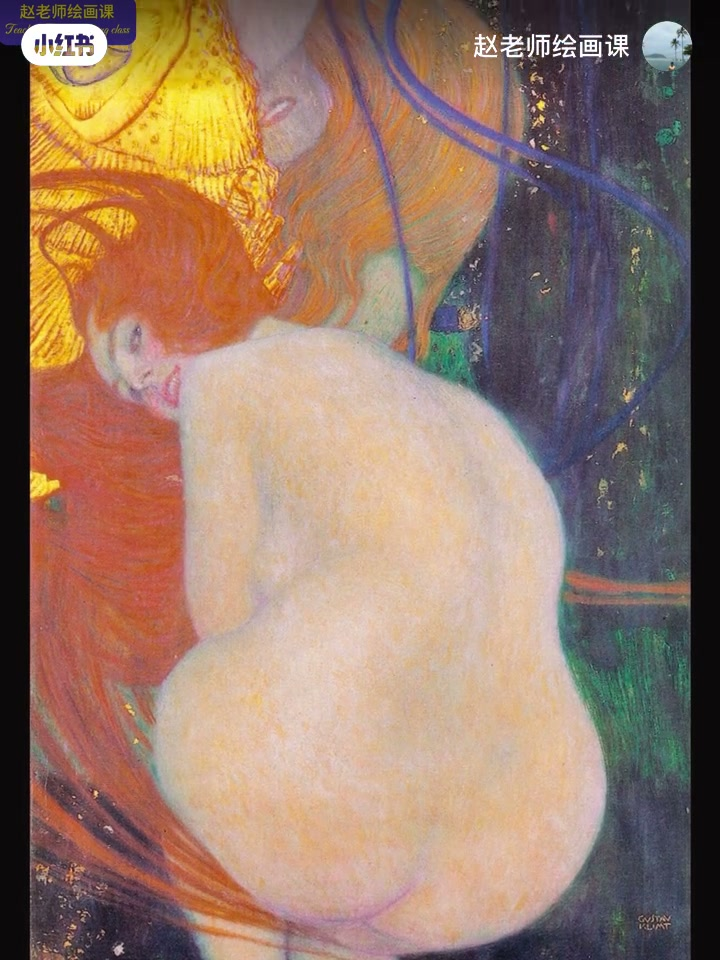
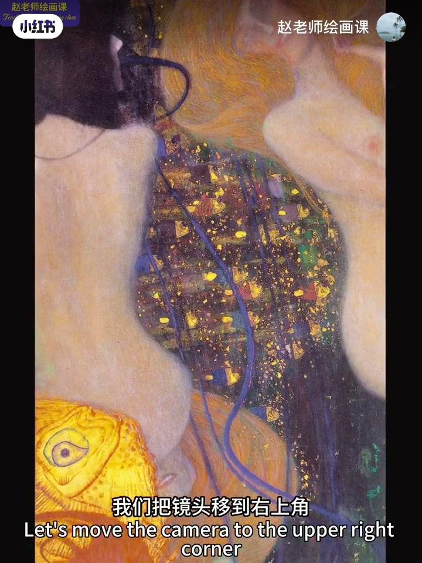
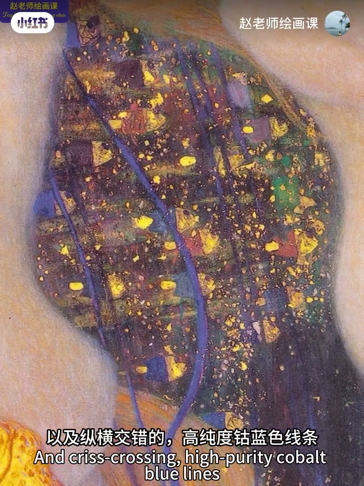
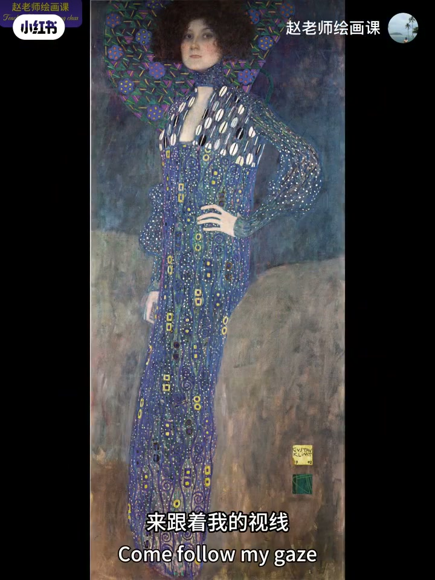

内容要点
上期两种节奏法之外，还有繁与简。走进克里姆特：面部头发线条色彩复杂为繁，躯干对比弱细节少为简；背景暗蓝紫泛红绿、金箔与高纯钴蓝线又是繁——繁简交替如强弱音符。另一幅从右到左、从上到下同样简繁跳动。题外话：画不下去时问对物象最初最强感受；没有感觉就放下笔走进自然。
知识结构
脸繁身简；背景金箔线繁；如强弱音符。
另一幅左右上下简繁跳动。
无感觉何来表达；向日常取感受。
节奏不必只靠色相跳跃：让「繁（多变细节）」与「简（整块安静）」交替出现，画面就会像音乐一样呼吸。
00:00-01:40克里姆特：繁与简如强弱音符
上期两种构建节奏法之外还有没有？进入克里姆特梦幻世界：华丽细节、强烈又温柔、现实又似梦境，唤起得到爱情又无法看清的矛盾。色彩起何作用？
右上脸与头发：丰富线条与色彩变化＝复杂感；躯干对比弱细节少＝整体简约。繁简对比贯穿全画。中间背景较暗蓝紫泛红绿、闪烁金箔与纵横高纯钴蓝线＝繁；左边人物背部＝简；金鱼与女人头发脸＝繁，再往下简与繁交替——如跳动强弱音符，赋予节奏美感。00:18／00:44／01:16。



01:40-02:12另一幅：左右上下扫节奏
感兴趣可翻往期「色彩的繁与简」。克里姆特另一幅：跟着视线从右到左——简、繁、简、繁、简；从上到下同样简繁交替。能否 get 到节奏感？仍是丰富与简约对比形成的节奏美。01:50 字幕标注可核验。

02:12-03:29没有感觉，何来表达
题外话：画家除绝妙表达，还有超常感受力。画不下去时试问：对物象最初最强烈的感受是什么？没有感觉何来表达——那就放下笔，走进阳光下的花草、街上车流、大爷下棋与阿姨太极。
感受可来自世界方方面面。色彩节奏讲到这；预告色彩系统课。三连收束。
完整转录（91段）
以下文本由 Whisper medium 模型自动转录，可能存在少量识别误差，已尽可能修正。
上一期呢
我们了解了用色彩构建画面节奏感的两种方法
那还有没有其他方法呢
来 让我们一起进入科里姆特的梦幻世界
华丽的色彩 丰富的细节
强烈又饱含温柔
现实又好似梦境
想要抓住又无法触及
仿佛唤起了我们得到了爱情又无法看清的矛盾感受
如此绝妙的艺术表达
色彩在其中起到了什么作用
我们把镜头移到右上角
揉脸部和头发
画像用丰富的线条和色彩变化刻画出一种复杂感
到了躯干部位
因为色彩对比弱 细节少
显得整体而简越
这种色彩繁与简的对比
贯穿着整个画面
继续往下
中间背景较暗的蓝紫中泛着红绿
还有闪烁的金箔
以及纵横交错的高纯度古蓝色线条
这叫做繁
到左边人物背部是简
金鱼和女人的头发
脸叫繁
往下
简
繁
有没有感觉
这就是色彩丰富与简约之间的对比
它们就像跳动的强弱音符
富语画面 节奏的美感
感兴趣的朋友可以翻翻我之前的作品
有一期也专门讲过色彩的繁语简
克林姆特的另外一幅
来
跟着我的视线
从右到左
简
繁
简
繁
简
从上到下
简
繁
简
繁
简
繁
能不能get到这种节奏感
这就是色彩丰富与简约之间的对比
形成的节奏美感
好了
聊几句题外话
画家除了绝妙的艺术表达之外
还有远超常人的艺术感受力
当我们画不下去的时候
试问自己
对物相最初的最强烈的感受是什么
没有感觉
何来表达
那就放下画笔
趁着阳光灿烂
走进自然
去看看路边的花花草草
和街上的车水马龙
看看小区大爷
一起致胜的神采飞扬
和阿姨打太极时的气定神闲
感受并不是什么高大上的词
它可以来自这个世界的方方面面
关于色彩的节奏之美
就讲到这
预告一下
我的色彩系统科将在6月底上线
从大师作品中解构色彩原理
启发美学思考
让基础知识转化为应用表达
系统训练加反馈总结
层层递进
环环相扣
让你的色彩能力和审美素养
迈上全新的台阶
详情点击关注
私信即可
感谢大家一如既往的支持和喜欢
我们下期见
拜拜